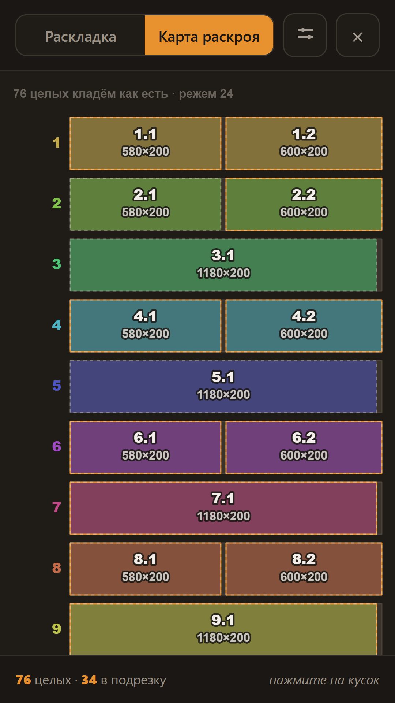
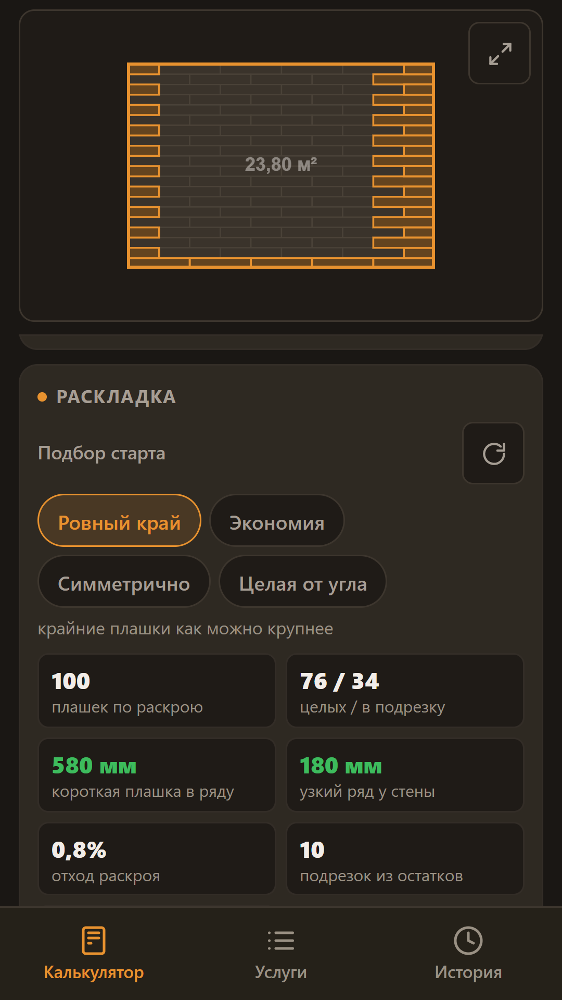
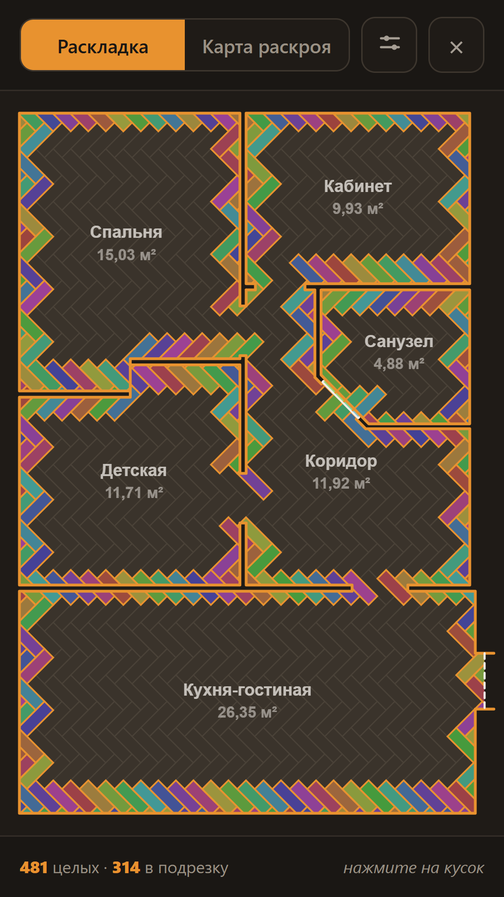
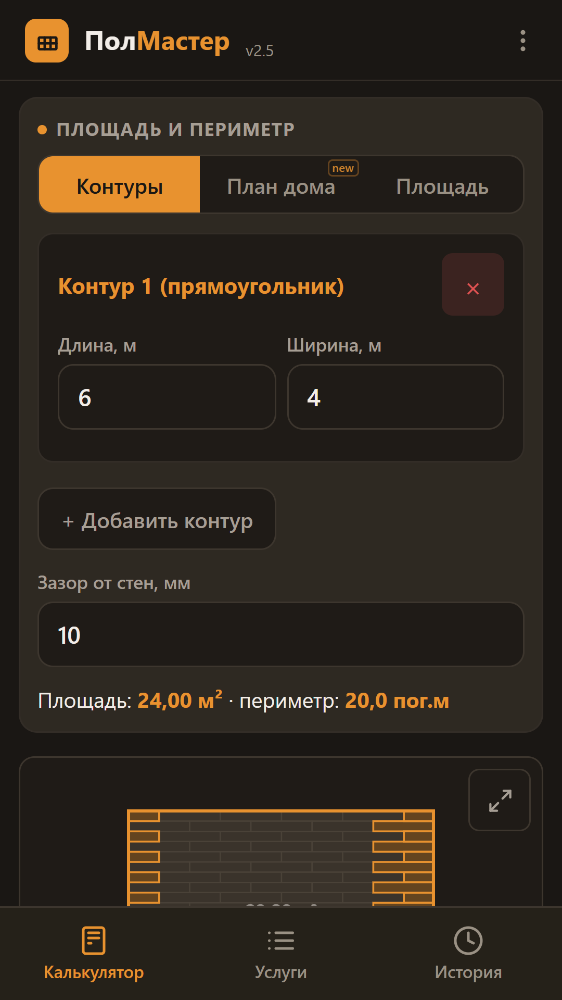
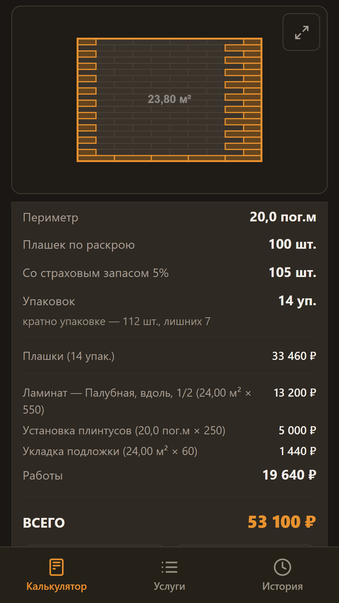

Калькулятор ламината и плитки, который считает по раскрою
ПолМастер раскладывает покрытие по комнате плашка за плашкой и говорит, сколько упаковок купить. Деление площади комнаты на площадь плашки обычно даёт меньше, чем уйдёт на самом деле, — здесь видно, сколько нужно и почему.
Скачать в RuStore Android, расчёт материала бесплатный, работает без интернета




Что умеет
- Расчёт материала для прямоугольной комнаты или по площади
- Ламинат, SPC, кварцвинил, LVT, инженерная доска, плитка, керамогранит
- Палубная укладка со смещением 1/2 и 1/3, диагональ, ёлочка, плитка
- Схема раскладки на экране
- Страховой запас от сложности раскладки, а не «плюс 10 % всем»
- Карта раскроя: какую плашку резать и на какие куски
- План дома: комнаты, стены и проёмы, укладка одним полотном
- Несколько комнат, обрезки идут из одной в другую
- Смета с вашими ценами — картинкой в мессенджер
- Комнаты любой формы, история объектов, свои нормы
Про-версия — разовая покупка, без подписки. Купить можно, написав разработчику из приложения.
Что учитывает расчёт
Тип соединения. У замкового покрытия обрезок идёт только в начало следующего ряда — замок с одной стороны. У клеевого его можно поставить куда угодно, и расход меньше.
Пропил. Инструмент съедает миллиметры: из плашки 1380 две половины по 690 не выходят.
Нормы производителя. Минимальная длина куска в ряду, ширина крайнего ряда, смещение стыков.
Ёлочка. Левые и правые плашки зеркальные и не заменяют друг друга — приложение считает их отдельно.
Статьи
Как рассчитать ламинат на комнату Почему деление площади даёт меньше, чем нужно, и сколько брать на самом деле Укладка ёлочкой: сколько брать и как считать Левые и правые плашки, запас и раскладка от центра комнатыСвязь
Вопросы, замечания и покупка Про-версии: Telegram @Shacallll, почта davleev_zinnur@mail.ru.